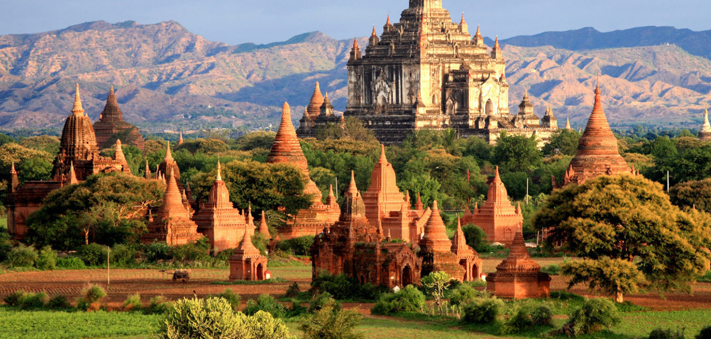

Giá từ: 18.900.000đ/người
🚗 Myanmar – đất nước của những ngôi chùa dát vàng, của nụ cười hiền hậu và linh hồn Phật giáo tỏa sáng giữa Đông Nam Á.
Hành trình đến Myanmar là chuyến đi tìm lại bình yên trong tâm hồn, chiêm ngưỡng những công trình Phật giáo tráng lệ và hòa mình vào đời sống giản dị của người dân nơi đây.
🌇 Ngày đầu tiên, du khách đặt chân đến Yangon – nơi có chùa vàng Shwedagon lấp lánh ánh vàng dưới nắng chiều. Khi màn đêm buông xuống, ánh đèn phản chiếu tạo nên khung cảnh huyền diệu, linh thiêng.
🎈 Tiếp tục đến Bagan – vùng đất với hàng ngàn ngôi chùa cổ. Từ khinh khí cầu, bạn sẽ thấy biển tháp vàng trải dài đến tận chân trời, khung cảnh tựa chốn thần tiên.
🌄 Mandalay – thành phố cuối cùng của triều đại phong kiến Myanmar, với cầu gỗ U Bein trăm năm tuổi và mặt hồ Taungthaman yên bình.
🍛 Đêm cuối, thưởng thức ẩm thực truyền thống, ngắm điệu múa dân gian, và cảm nhận sự chân thành, hiếu khách từ nụ cười Myanmar hiền hòa.
Chuyến đi không chỉ là hành trình khám phá mà còn là hành trình tìm về sự an nhiên và niềm tin sâu lắng trong mỗi trái tim.